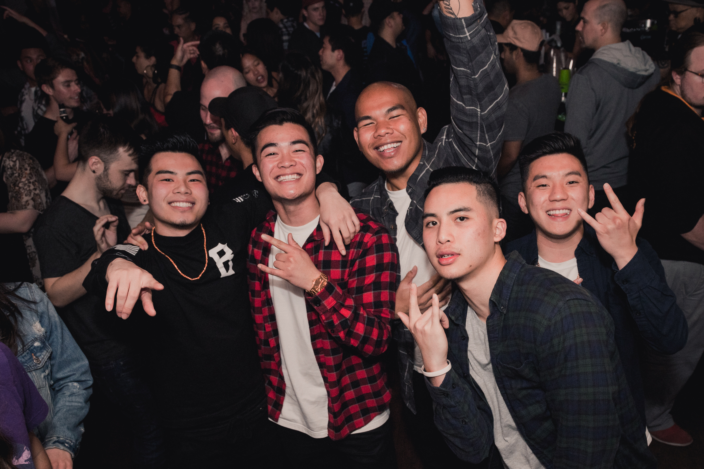

who
Because it's my last semester in college, I've been valuing my time with my friends a lot more than usual. The thought of not seeing them everyday makes me sad. :-(
Because it's my last semester in college, I've been valuing my time with my friends a lot more than usual. The thought of not seeing them everyday makes me sad. :-(
I probably go to Tasty Pot on Clement at least twice a week. I love soup.
I celebrated a friend's birthday on a boat. With booze. And a fear of drowning.
Black Panther in Busan.
I've been missing home and my family so much. Knowing that they're out there believing in me makes me continue to work harder.